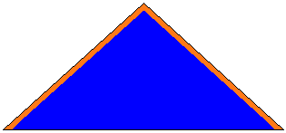

Volver | Distrito San Luis - Región Falcón |
Dirección: Templo Parroquial "San Francisco de Asís". Santa Cruz de Bucaral
Municipio: Unión
Estado: Falcón
Día y hora de reuniones: Sábados de 3: 00 a 5:00 PM
Jefe de Grupo: José Nuñez
Teléfonos: 0426-7627695
Dirección de Correos:
Institución Patrocinadora: Parroquia San Francisco de Asís
